Guía de Galahad para Hero Wars: Dominion Era - Build y Consejos de Tanque (Web/FB)
- Por: Alexandre Domingos. .
¿Estás listo para desatar el poder de un guerrero imparable? Galahad es el tanque intrépido que tu equipo necesita en Hero Wars: Dominion Era. Conocido por su legendaria resiliencia y devastadores ataques físicos, este Guerrero Bendecido carga en batalla sin dudarlo, protegiendo a los aliados mientras aplasta a los enemigos en la línea del frente.
En esta guía completa, descubrirás todo sobre Galahad: desde sus estadísticas máximas y habilidades principales hasta los mejores artefactos, glifos y composiciones de equipo. Ya sea que estés construyendo tu primer tanque o buscando optimizar tu estrategia, esta guía te ayudará a desbloquear el verdadero potencial de Galahad y dominar el campo de batalla.
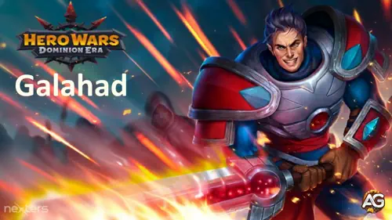
¿Quién es Galahad en Hero Wars: Dominion Era?
Galahad es un Tanque basado en Fuerza que personifica el coraje y la determinación inquebrantable. Firme como el acero de Kharun y sin conocer el miedo ni la duda, solo avanza hacia la batalla. Su confianza en sí mismo y en sus aliados ha mantenido a este gran guerrero fuerte durante muchos años, convirtiéndolo en uno de los defensores de primera línea más confiables de Hero Wars: Dominion Era.
Lo que hace a Galahad verdaderamente único es su Vampirismo del 45%: una estadística revolucionaria que le permite recuperar salud basándose en el daño que inflige. Cuantos más enemigos golpea, más se cura a sí mismo, creando un tanque autosuficiente que se vuelve más difícil de matar cuanto más tiempo lucha. Este vampirismo se sincroniza perfectamente con su alto ataque físico, convirtiendo sus capacidades ofensivas en fuerza defensiva.
- Rol Principal: Tanque / Guerrero
- Facción: Bendecido
- Estadística Principal: Fuerza
- Posición: Lucha en la línea del frente
- Fortalezas Clave: Gran supervivencia, Alto daño físico, Vampirismo del 45% para autocuración
Galahad – Estadísticas Máximas
 Poder Poder195,156 |
 Salud Salud1,159,084 |
 Fuerza Fuerza17,584 |
 Armadura Armadura55,450 |
 Ataque Físico Ataque Físico69,428 |
 Defensa Mágica Defensa Mágica48,540 |
 Agilidad Agilidad3,301 |
 Vampirismo Vampirismo45% |
 Ataque Mágico Ataque Mágico9,878 |
 Inteligencia Inteligencia2,776 |
Ventajas y Desventajas de Galahad - Hero Wars Web y Facebook
✅ Ventajas
- Autosustento Excepcional: Con un 45% de Vampirismo, Galahad se cura constantemente a través del combate, convirtiéndolo en uno de los tanques más autosuficientes que no depende de sanadores externos.
- Alto Daño Físico: A diferencia de los tanques puramente defensivos, Galahad inflige un daño físico considerable con todas sus habilidades, convirtiéndolo en una amenaza ofensiva legítima.
- Inmunidad al Control: Carga Imparable rompe todos los efectos de control de masas, permitiéndole escapar de aturdimientos, congelaciones y silencios que neutralizarían a otros tanques.
- Definitiva de Área: Espadas de Hierro golpea a todos los enemigos simultáneamente, proporcionando un excelente daño en pelea grupal y curación masiva a través del Vampirismo al golpear múltiples objetivos.
- Penetración de Daño Puro: Orgullo de Harun añade daño puro que ignora toda la armadura y defensa mágica, asegurando que siga siendo amenazante incluso contra enemigos fuertemente blindados.
- Disrupción de Retaguardia: Su movilidad y estilo de juego agresivo le permiten penetrar las líneas enemigas y presionar a los causantes de daño y soportes vulnerables.
- Fuerte en Fase Temprana a Media: Galahad rinde excepcionalmente bien antes de que los enemigos adquieran fuertes capacidades anti-curación, haciéndolo dominante en la progresión temprana.
- Baja Dependencia de Equipo: A diferencia de algunos tanques que requieren artefactos específicos o soporte extenso, Galahad funciona efectivamente con mejoras básicas gracias a su Vampirismo innato.
❌ Desventajas
- Vulnerabilidad Anti-Curación: Toda la supervivencia de Galahad depende de su Vampirismo. Héroes como Celeste, Biscuit o la Bandera de Guerra del Declive anulan completamente su autocuración, haciéndolo vulnerable.
- Dependencia de Energía: Su habilidad más poderosa (Espadas de Hierro) requiere energía completa. Héroes que niegan energía como Jorgen pueden impedir que use su definitiva, reduciendo drásticamente su efectividad.
- Debilidad contra Esquiva: Contra héroes con alta esquiva (Aurora, Dante, Heidi, Yasmine, Qing Mao), Galahad tiene dificultades porque los ataques fallidos no activan la curación del Vampirismo.
- Sin Soporte al Equipo: A diferencia de tanques utilitarios (resurrección de Astaroth, desplazamiento de Cleaver), Galahad no proporciona mejoras, escudos ni soporte a los compañeros — es puramente egoísta.
- Ventana de Vulnerabilidad al Control: Aunque Carga Imparable rompe el control, aún es vulnerable a ser controlado inicialmente. Un control de masas pesado puede inmovilizarlo antes de que se libere.
- Escalado de Defensa Mágica: Sin invertir en defensa mágica (aspectos, glifos, artefactos), Galahad puede ser derretido rápidamente por equipos de magia a pesar de su alta salud.
- Contrarrestado por Daño Puro: Aunque inflige daño puro, también es vulnerable a él. Héroes como Iris que exponen su Alma pueden evadir todas sus inversiones defensivas.
- Escalado Tardío: A medida que el meta cambia hacia composiciones anti-curación y de control pesado en el juego tardío, Galahad se vuelve menos dominante comparado con tanques utilitarios u opciones más especializadas.
Veredicto: Galahad destaca como un tanque agresivo y autosuficiente que domina a través de supervivencia bruta y daño. Sin embargo, su dependencia del Vampirismo lo hace vulnerable a contramedidas específicas. Se usa mejor en composiciones que puedan protegerlo de la anti-curación o cuando se enfrenta a equipos sin contramedidas fuertes. Combínalo con soportes limpiadores o generadores de energía para maximizar su potencial mientras se mitigan sus debilidades.
Prioridad de Mejora de Habilidades de Galahad - Hero Wars: Dominion Era
Entender las prioridades de habilidades te ayuda a maximizar el potencial de Galahad eficientemente, especialmente cuando los recursos son limitados al inicio del juego.
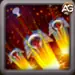
1. Espadas de Hierro (Definitiva)
Galahad invoca espadas de justicia desde lo alto, golpeando a todos los enemigos en el campo de batalla. Esta es su habilidad definitiva, que se activa cuando su barra de energía se llena completamente. Las espadas caen infligiendo daño físico a múltiples enemigos simultáneamente, haciéndola excelente para dañar equipos enemigos completos.
Fórmula de Daño: 28,628 (30% ataque físico + 60 × nivel)
💉 Sinergia con Vampirismo: Como esta habilidad golpea a múltiples enemigos, activa una curación masiva a través del 45% de Vampirismo de Galahad. Cuantos más enemigos golpees, más salud recuperas, convirtiendo esta definitiva en una herramienta tanto ofensiva como defensiva.
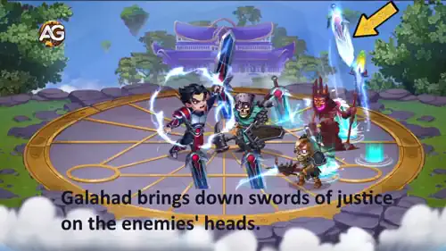
Prioridad de Evolución: Muy Alta – Esta es la habilidad definitiva de Galahad y tu principal fuente de daño en área. Cada mejora aumenta significativamente el daño, afectando a todos los enemigos golpeados. Como es tu definitiva, se carga durante la batalla y puede cambiar el rumbo de los combates. Prioriza esta habilidad primero ya que proporciona el mejor retorno de inversión tanto en producción de daño como en impacto en peleas grupales.
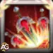
1A. Represalia de Hierro - Habilidad de Ascensión
Después de desbloquear la Ascensión V, Espadas de Hierro gana un poderoso efecto adicional. Ahora, cuando las espadas golpean a enemigos que tienen menos del 30% de Salud restante, esos enemigos reciben el debuff de Represalia (máximo 5 enemigos por lanzamiento). Esta mejora transforma tu definitiva de daño puro en un finalizador que puede activar múltiples contraataques contra enemigos debilitados.
Efecto: Aplica Represalia a enemigos por debajo del 30% de Salud (máx. 5 objetivos)
Nota de Ascensión: Esta mejora hace que Espadas de Hierro sea aún más valiosa, pero recuerda que la Ascensión toma un tiempo considerable en desbloquearse. Incluso sin ella, la habilidad base merece la máxima prioridad.
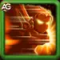
2. Carga Imparable
Galahad carga hacia adelante sin miedo, rompiendo cualquier efecto de control (aturdimientos, congelaciones, silencios) que le esté afectando. Mientras avanza, inflige daño físico a todos los enemigos cercanos en su camino. Esta habilidad tiene un enfriamiento de 15 segundos, lo que significa que Galahad puede usarla múltiples veces durante una batalla. Es esencial tanto para la movilidad como para la supervivencia, permitiéndole escapar de situaciones peligrosas o penetrar formaciones enemigas.
Fórmula de Daño: 41,214 (50% ataque físico + 50 × nivel)
Enfriamiento: 15 segundos
💉 Sinergia con Vampirismo: Cada enemigo golpeado durante la carga proporciona curación a través del 45% de Vampirismo. Con activaciones frecuentes (cada 15s), esta habilidad sustenta constantemente a Galahad durante combates prolongados.
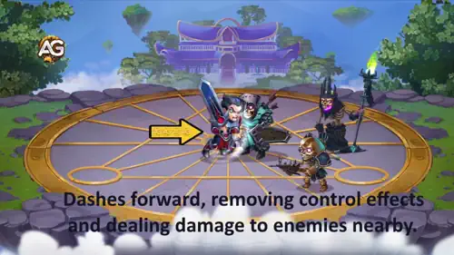
Prioridad de Evolución: Alta – Esta habilidad mantiene a Galahad vivo y luchando al eliminar efectos de control de masas que de otra forma lo neutralizarían. El daño es respetable y se activa frecuentemente debido al corto enfriamiento. Mejora esta segunda para mejorar tanto la supervivencia como el daño sostenido. El mecanismo de rotura de control es invaluable contra equipos con control de masas pesado.
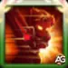
2A. Carga Implacable - Habilidad de Ascensión
Al alcanzar la Ascensión II, Carga Imparable gana un activador automático: siempre que el enemigo más cercano active su habilidad definitiva, Galahad carga contra él inmediatamente, evitando su cola normal de habilidades. Esto solo puede ocurrir una vez cada 7 segundos. Además, el primer enemigo golpeado por esta carga reactiva pierde el 30% de su energía, potencialmente retrasando o impidiendo su siguiente definitiva.
Efecto: Se activa automáticamente cuando el enemigo más cercano usa su definitiva (una vez cada 7s) + El objetivo pierde 30% de energía
Nota de Ascensión: Esta mejora agrega un valor estratégico significativo al interrumpir las definitivas enemigas y controlar la energía. Sin embargo, dado que la Ascensión II llega mucho antes que la V, podrías tener esto antes, haciendo que la habilidad sea aún más digna de inversión.
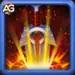
3. Represalia (Periódica)
Galahad realiza un contraataque especial, golpeando automáticamente al enemigo con la salud actual más baja. Esta es una habilidad periódica que se activa automáticamente cada 20.5 segundos durante la batalla. Es la forma de Galahad de acabar con enemigos debilitados, infligiendo un daño físico considerable. La habilidad apunta inteligentemente a quien esté más cerca de la muerte, haciéndola excelente para asegurar eliminaciones.
Fórmula de Daño: 61,042 (80% ataque físico + 50 × nivel)
Enfriamiento: 20.5 segundos
💉 Sinergia con Vampirismo: Con el multiplicador de daño más alto (80% ataque físico), esta habilidad proporciona la mayor curación de objetivo único de Galahad a través del Vampirismo. Cada golpe de Represalia puede recuperar una cantidad sustancial de salud, haciéndola crucial para la supervivencia sostenida.
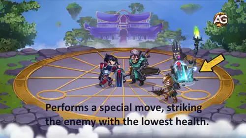
Prioridad de Evolución: Alta – Esta habilidad tiene el daño base más alto de todas las habilidades de Galahad y apunta automáticamente al enemigo más vulnerable. Es extremadamente eficiente para acabar con oponentes que tu equipo ha debilitado. Mejora esta junto con Carga Imparable, ya que el alto multiplicador de daño significa que cada nivel proporciona aumentos significativos de daño. Esta habilidad no tiene mejora de Ascensión, por lo que lo que inviertas va directamente a un daño probado y confiable.
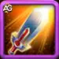
4. Orgullo de Harun (Periódica)
Esta habilidad tiene componentes pasivos y activos. Pasivo: La definitiva Espadas de Hierro de Galahad ahora inflige un adicional de 17,135 de daño puro con cada lanzamiento. Activo: Cada 18 segundos, Galahad entra en un estado heroico durante 10 segundos, durante el cual TODAS sus habilidades y ataques básicos infligen daño puro extra. El daño puro ignora tanto la armadura como la defensa mágica, haciéndolo extremadamente valioso.
💉 Sinergia con Vampirismo: Como el Vampirismo funciona con todo el daño infligido por habilidades (físico, mágico Y puro), este daño puro extra también cura a Galahad a través de su 45% de Vampirismo. Esto hace que Orgullo de Harun sea significativamente más valioso para la supervivencia sostenida — te curas tanto de las porciones de daño físico COMO puro simultáneamente.
Fórmula de Bonus Pasivo: 17,135 de daño puro añadido a Espadas de Hierro (20% ataque físico + 25 × nivel)
Buff Activo: Todas las habilidades/ataques +17,135 de daño puro durante 10 segundos
Enfriamiento: 18 segundos
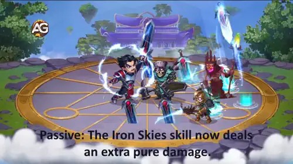
Prioridad de Evolución: Media-Alta – Aunque el daño puro es excelente y esta habilidad mejora tu definitiva permanentemente, debería mejorarse después de las tres primeras habilidades. El bonus pasivo solo afecta a Espadas de Hierro (que ya estás mejorando), y el buff activo, aunque fuerte, tiene menos impacto inmediato que tus otras habilidades. Sin embargo, sigue valiendo la pena mejorarlo constantemente — solo prioriza tu definitiva, carga y represalia primero. Esta habilidad escala bien pero se beneficia más cuando tus otras habilidades ya son fuertes.
Resumen: Enfócate en Espadas de Hierro primero para máximo daño en área, luego divide recursos entre Carga Imparable (supervivencia) y Represalia (daño de objetivo único), y finalmente mejora Orgullo de Harun para amplificar todo lo demás. Este enfoque asegura que Galahad permanezca efectivo en todas las etapas del juego.
Mejor Aspecto para Galahad - Hero Wars: Dominion Era
Elegir los aspectos correctos para mejorar maximiza la efectividad de Galahad como tanque de primera línea, mejorando su supervivencia y presencia en combate.
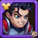
Aspecto Predeterminado
Ganancia de Estadísticas: Fuerza +1,365
- Salud por Fuerza: +54,500
- Ataque Físico por Fuerza: +1,365
Prioridad de Evolución: Media – El aspecto predeterminado proporciona estadísticas equilibradas pero en cantidades menores comparadas con los aspectos especializados. Vale la pena mejorarlo gradualmente, pero prioriza los aspectos más impactantes primero. Ofrece una base sólida con supervivencia (salud) y daño (ataque físico), haciéndolo una opción decente para empezar.
Total de  Piedras de Aspecto de Fuerza para nivel máximo: 30,825
Piedras de Aspecto de Fuerza para nivel máximo: 30,825
Aspecto Angelical
Ganancia de Estadísticas: Ataque Físico +7,095
Prioridad de Evolución: Media-Alta – Aunque Galahad se beneficia del ataque físico extra para aumentar su producción de daño, como tanque su rol principal es la supervivencia y protección. Este aspecto aumenta significativamente sus capacidades ofensivas, haciéndolo golpear más fuerte con todas sus habilidades de daño físico. Nota importante: Gracias al 45% de Vampirismo de Galahad, más ataque físico también significa más autocuración — cuanto más daño inflige, más salud recupera. Mejora este después de asegurar tus aspectos defensivos (Campeón, Romántico, Celestial) para transformar a Galahad en un tanque causante de daño amenazante que se sustenta a sí mismo a través del combate.
Total de Piedras de Aspecto de Fuerza para nivel máximo: 55,410
Aspecto Campeón
Ganancia de Estadísticas: Salud +106,870
Prioridad de Evolución: Muy Alta – Este es EL aspecto más importante para Galahad. Como tanque de primera línea, su trabajo principal es absorber daño y mantenerse vivo para proteger a su equipo. El aumento masivo de salud de más de 100,000 PV aumenta dramáticamente su supervivencia, permitiéndole resistir definitivas enemigas, daño sostenido y fuego concentrado. Esta debería ser tu prioridad absoluta al mejorar los aspectos de Galahad. Más salud significa más tiempo en el campo de batalla haciendo su trabajo.
Total de Piedras de Aspecto de Fuerza para nivel máximo: 54,330
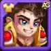
Aspecto Romántico
Ganancia de Estadísticas: Armadura +10,650
Prioridad de Evolución: Alta – La armadura reduce directamente el daño físico recibido, lo cual es crucial ya que muchos causantes de daño enemigos dependen de ataques físicos. Este aspecto hace a Galahad significativamente más resistente contra amenazas físicas como guerreros y tiradores enemigos. Mejora este como tu segunda prioridad (después del aspecto Campeón) para maximizar sus capacidades defensivas. Combinado con su alta salud, esta armadura hace a Galahad extremadamente difícil de derribar con daño físico.
Total de Piedras de Aspecto de Fuerza para nivel máximo: 55,410
Aspecto Celestial
Ganancia de Estadísticas: Defensa Mágica +10,650
Prioridad de Evolución: Alta – La defensa mágica es igualmente importante que la armadura para un tanque completo. Muchos héroes enemigos poderosos infligen daño mágico (magos, soportes con habilidades dañinas), y sin una defensa mágica adecuada, Galahad puede ser derretido rápidamente a pesar de su salud. Esta debería ser tu tercera prioridad, justo después del aspecto Romántico. Tener tanto alta armadura como alta defensa mágica asegura que Galahad pueda tanquear contra cualquier composición de equipo, ya sea enfocada en daño físico o mágico.
Total de Piedras de Aspecto de Fuerza para nivel máximo: 55,410
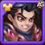
Aspecto Atronador
Ganancia de Estadísticas: Ataque Físico +7,095
Prioridad de Evolución: Media-Alta – Similar al aspecto Angelical, este proporciona un aumento sustancial de ataque físico. Aunque mejora el potencial de daño de Galahad con su Represalia y otras habilidades, no es tan crítico como las estadísticas defensivas para su rol de tanque. Sin embargo, recuerda que su 45% de Vampirismo convierte este daño extra en curación adicional, mejorando su sustento en combates prolongados. Considera este tu cuarta o quinta prioridad. Si tienes tanto el aspecto Angelical como el Atronador, podrías alternar entre mejorarlos después de maximizar tus aspectos defensivos, ya que proporcionan beneficios idénticos. Tener ambos convertirá a Galahad en un verdadero luchador — difícil de matar Y golpeando fuerte, curándose constantemente a través del vampirismo.
Total de Piedras de Aspecto de Fuerza para nivel máximo: 55,410
Orden de Mejora Recomendado: Aspecto Campeón (Salud) → Aspecto Romántico (Armadura) → Aspecto Celestial (Defensa Mágica) → Aspectos Angelical/Atronador (Ataque Físico) → Aspecto Predeterminado. Este orden asegura que Galahad se convierta en un muro indestructible primero, y luego añade poder ofensivo una vez que su supervivencia está asegurada.
Prioridad de Evolución de Glifos de Galahad - Hero Wars: Dominion Era
Priorizar los glifos correctos asegura que Galahad maximice su potencial de tanque y se mantenga vivo para proteger a tu equipo durante batallas intensas.
1er Glifo - Ataque Físico
Aumenta la producción de daño de Galahad con todas sus habilidades de daño físico, incluyendo Espadas de Hierro, Carga Imparable y Represalia. Un mayor ataque físico también significa mayor curación a través de su 45% de Vampirismo.
Ganancia de Estadísticas: Ataque Físico +4,340
Prioridad de Evolución: Media – Aunque el ataque físico beneficia a Galahad al aumentar tanto el daño como la curación por vampirismo, como tanque su rol principal es la supervivencia, no causar daño. Este glifo es valioso pero debería mejorarse después de asegurar sus estadísticas defensivas. La sinergia con vampirismo lo hace más útil de lo que sería normalmente, pero la salud y las resistencias van primero.
2do Glifo - Armadura
Reduce directamente todo el daño físico entrante. Con muchos causantes de daño enemigos dependiendo de ataques físicos (guerreros, tiradores), la armadura es esencial para la supervivencia de Galahad en la línea del frente.
Ganancia de Estadísticas: Armadura +6,500
Prioridad de Evolución: Alta – La armadura es una de las estadísticas defensivas más importantes de Galahad. Cuanto mayor sea su armadura, menos daño físico penetra, permitiéndole tanquear más tiempo contra equipos de daño físico pesado. Mejora este como tu segunda prioridad después de Salud. Combinado con su masivo pool de salud y vampirismo, una armadura alta hace a Galahad casi invencible contra atacantes físicos.
3er Glifo - Salud
Aumenta el pool de salud máxima de Galahad, permitiéndole absorber más daño antes de caer. La salud es la base de la supervivencia de cualquier tanque — más PV significa más tiempo en el campo de batalla protegiendo aliados.
Ganancia de Estadísticas: Salud +62,200
Prioridad de Evolución: Muy Alta – Este es EL glifo más importante para Galahad. Con más de 62,000 de salud adicional, este glifo proporciona una supervivencia masiva que beneficia contra TODOS los tipos de daño — físico, mágico y puro. La salud siempre debería ser tu primera prioridad al evolucionar glifos. Un pool de salud más grande significa que Galahad puede resistir definitivas enemigas, sobrevivir al fuego concentrado y usar su vampirismo más tiempo para sustentarse. Prioriza esto sobre todo lo demás.
4to Glifo - Defensa Mágica
Reduce todo el daño mágico entrante de magos enemigos y habilidades basadas en magia. Esencial para un tanqueo equilibrado contra composiciones enemigas pesadas en magia.
Ganancia de Estadísticas: Defensa Mágica +6,500
Prioridad de Evolución: Alta – La Defensa Mágica es igualmente importante que la Armadura para un tanque completo. Muchos enemigos poderosos infligen daño mágico, y sin una defensa mágica adecuada, Galahad puede ser derretido rápidamente a pesar de su salud. Mejora este como tu tercera prioridad, justo después de Armadura. Tener tanto alta armadura como alta defensa mágica asegura que Galahad pueda manejar cualquier composición de equipo, ya sea que el enemigo se enfoque en daño físico o mágico.
5to Glifo - Fuerza
Fuerza es la estadística principal de Galahad, proporcionando doble beneficio: salud adicional y ataque físico. Cada punto de Fuerza otorga 40 puntos de salud y 1 punto de ataque físico (ya que Fuerza es su estadística principal).
Ganancia de Estadísticas: Fuerza +1,135
- Salud por Fuerza: +45,400
- Ataque Físico por Fuerza: +1,135
Prioridad de Evolución: Media-Alta – Este glifo es excelente porque proporciona tanto supervivencia (salud) como daño (ataque físico), haciéndolo muy eficiente. Los +45,400 de salud aumentan significativamente la resistencia, mientras que los +1,135 de ataque físico aumentan tanto el daño como la curación por vampirismo. Mejora este como tu cuarta prioridad. Aunque no es tan impactante como los glifos puros de Salud, Armadura o Defensa Mágica individualmente, el doble beneficio lo hace valioso para el rendimiento general. Es el glifo perfecto de punto medio después de asegurar tus estadísticas defensivas principales.
Orden de Evolución de Glifos Recomendado: Salud (3ro) → Armadura (2do) → Defensa Mágica (4to) → Fuerza (5to) → Ataque Físico (1ro). Este orden prioriza la supervivencia primero, luego añade capacidades ofensivas a través de Fuerza y Ataque Físico una vez que Galahad puede mantenerse vivo de manera confiable.
Prioridad de Evolución de Artefactos de Galahad - Hero Wars: Dominion Era
Los artefactos proporcionan aumentos de estadísticas sustanciales que pueden mejorar dramáticamente el rendimiento de Galahad, especialmente cuando se priorizan correctamente para su rol de tanque.
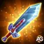
Artefacto de Arma: Espada Haruniana
El artefacto de arma insignia de Galahad proporciona un aumento masivo al ataque físico. Cuando Galahad usa su habilidad definitiva Espadas de Hierro, este artefacto tiene un 100% de probabilidad de activación para desencadenar un efecto que otorga estadísticas de bonificación a todo el equipo durante 9 segundos, convirtiéndolo en un buff personal y grupal.
Ganancia de Estadísticas: Ataque Físico +33,459
Activación: 100% de probabilidad al usar la habilidad definitiva
Duración del Efecto: Buff de equipo durante 9 segundos
Prioridad de Evolución: Media-Alta – Aunque este artefacto proporciona un enorme aumento de ataque físico y se sincroniza excelentemente con el 45% de Vampirismo de Galahad (más ataque = más curación), como tanque su función principal es la supervivencia. El artefacto de arma es valioso y definitivamente debería mejorarse, pero después de asegurar que sus artefactos defensivos sean fuertes. La activación del 100% con su definitiva y el buff de equipo lo hacen más valioso que un artefacto de daño puro. Mejora este como tu tercera prioridad, después de asegurar los artefactos de Libro y Anillo para máxima supervivencia.

Artefacto de Libro: Pacto del Defensor
El Pacto del Defensor hace honor a su nombre perfectamente, proporcionando estadísticas defensivas equilibradas que protegen contra amenazas tanto físicas como mágicas. Este es el artefacto por excelencia para tanques.
Ganancia de Estadísticas:
- Armadura: +12,546
- Defensa Mágica: +12,546
Prioridad de Evolución: Muy Alta – Este es EL artefacto más importante para Galahad. Como tanque de primera línea, necesita tanto armadura como defensa mágica para manejar cualquier composición enemiga. Este artefacto solo proporciona más de 12,000 puntos en AMBAS estadísticas defensivas, haciendo a Galahad significativamente más resistente contra todos los tipos de daño. El doble beneficio defensivo significa que cada punto de mejora proporciona un valor increíble. Prioriza este artefacto primero sobre todos los demás. Combinado con su masivo pool de salud de glifos y aspectos, estas resistencias hacen a Galahad casi inmortal. Un tanque que no puede sobrevivir no puede proteger al equipo — haz de esto tu prioridad absoluta.

Artefacto de Anillo: Anillo de Fuerza
El Anillo de Fuerza aumenta la estadística principal de Galahad, proporcionando doble beneficio igual que el glifo de Fuerza pero en una escala mucho mayor. Como Fuerza es su atributo principal, cada punto otorga tanto supervivencia como poder ofensivo.
Ganancia de Estadísticas: Fuerza +6,249
- Salud por Fuerza: +249,960
- Ataque Físico por Fuerza: +6,249
(Cada punto de Fuerza otorga: 40 puntos de salud + 1 punto de ataque físico cuando Fuerza es la estadística principal del héroe)
Prioridad de Evolución: Alta – Este artefacto es excepcionalmente valioso para Galahad, proporcionando casi 250,000 de salud adicional más de 6,000 de ataque físico. El aumento de salud mejora dramáticamente la supervivencia — es como añadir otro glifo de salud. Mientras tanto, el aumento de ataque físico impulsa tanto la producción de daño como la curación por vampirismo. Mejora este como tu segunda prioridad, justo después del artefacto de Libro. La combinación de salud masiva y daño que se convierte en curación a través del vampirismo hace este artefacto perfecto para el estilo de juego luchador-tanque de Galahad. Cierra la brecha entre supervivencia pura y producción de daño sostenible.
Orden de Evolución de Artefactos Recomendado: Pacto del Defensor (Libro) → Anillo de Fuerza (Anillo) → Espada Haruniana (Arma). Este orden asegura que Galahad se convierta en un muro impenetrable con máximas resistencias primero, luego añade un masivo pool de salud con beneficios ofensivos, y finalmente mejora su daño y utilidad de equipo a través del artefacto de arma.
Mejor Patronaje para Galahad - Hero Wars: Dominion Era
Elegir el patronaje de mascota correcto mejora significativamente la supervivencia y efectividad en combate de Galahad, complementando perfectamente su rol de tanque.
1er Lugar:

Oliver es LA mejor opción de patronaje para Galahad sin lugar a dudas. Esta mascota proporciona Salud + Armadura como estadísticas de bonificación, ambas críticas para un tanque de primera línea. Pero lo que realmente cambia las reglas del juego es la habilidad de patronaje de Oliver: curación automática cuando la salud de Galahad cae por debajo del 50%. Esta curación se activa cada 0.5 segundos mientras los PV permanecen bajos, proporcionando regeneración sostenida durante momentos críticos. Combinado con el 45% de Vampirismo de Galahad, esto crea un sistema de doble curación que lo hace increíblemente difícil de matar. Oliver esencialmente le da a Galahad una segunda línea de vida, permitiéndole sobrevivir al daño explosivo y combates prolongados. Las estadísticas defensivas más la curación de emergencia hacen de Oliver el compañero perfecto para maximizar la resistencia de Galahad.
Estadísticas de Bonificación del Patronaje: Salud, Armadura
Habilidad de Bonificación del Patronaje: El dueño se cura a sí mismo si su salud cae por debajo del 50% (la cantidad de curación depende del Poder del Patronaje, se activa cada 0.5 segundos)
2do Lugar:

Fenris es una excelente alternativa de patronaje que lleva a Galahad hacia un estilo de juego de luchador más agresivo. Las estadísticas de bonificación de Ataque Físico + Penetración de Armadura aumentan significativamente su producción de daño, lo que a su vez impulsa su curación a través del Vampirismo. Más daño infligido es igual a más salud recuperada. La habilidad de patronaje agrega control de masas al darle a Galahad una probabilidad de cegar a los enemigos con ataques básicos durante 2 segundos. Cegar reduce la precisión enemiga, proporcionando valor defensivo indirecto al hacer que los enemigos fallen sus ataques. Aunque no es tan puramente defensivo como Oliver, Fenris ofrece un enfoque equilibrado — aumentando tanto el nivel de amenaza de Galahad como su autosustento. Elige a Fenris si quieres que Galahad inflija más daño mientras mantiene una buena supervivencia a través de curación mejorada por vampirismo.
Estadísticas de Bonificación del Patronaje: Ataque Físico, Penetración de Armadura
Habilidad de Bonificación del Patronaje: El dueño tiene una probabilidad de cegar a los enemigos con su ataque básico durante 2 segundos (la probabilidad de ceguera depende del Poder del Patronaje)
3er Lugar:

Albus proporciona un valor moderado para Galahad, aunque no tan impactante como Oliver o Fenris. Las estadísticas de bonificación incluyen Ataque Mágico + Ataque Físico — el ataque físico ayuda con el daño y la curación por vampirismo, pero el ataque mágico es completamente desperdiciado ya que Galahad no tiene habilidades de daño mágico. La habilidad de patronaje aumenta el daño Puro infligido por el dueño, lo cual beneficia a la habilidad Orgullo de Harun de Galahad que añade daño puro a todas las habilidades. Dado que el daño puro también activa el vampirismo, este daño extra se convierte en curación. Sin embargo, el daño puro es solo una porción de la producción total de Galahad, haciendo este impulso menos impactante que estadísticas directas de ataque físico o supervivencia. Albus es una opción viable si quieres maximizar el potencial de daño de Orgullo de Harun, pero Oliver y Fenris ofrecen más utilidad general para el rol principal de Galahad como tanque.
Estadísticas de Bonificación del Patronaje: Ataque Mágico, Ataque Físico
Habilidad de Bonificación del Patronaje: Aumenta el daño Puro infligido por el dueño (el daño adicional depende del Poder del Patronaje)
4to Lugar:

Biscuit ofrece el menor valor para Galahad entre estas opciones. Las estadísticas de bonificación son Ataque Mágico + Armadura — mientras la armadura es buena para un tanque, el ataque mágico no proporciona ningún beneficio ya que Galahad no inflige daño mágico. La habilidad de patronaje aplica reducción de curación a los enemigos golpeados por los ataques del dueño durante 5 segundos. Aunque la anti-curación puede ser situacionalmente útil contra tanques o sanadores enemigos, no ayuda directamente a Galahad a sobrevivir o infligir más daño. Como tanque, la prioridad de Galahad es mantenerse vivo y proteger a su equipo, no debilitar la curación enemiga. Biscuit sería más adecuado para causantes de daño o héroes que contrarrestan específicamente composiciones pesadas en curación. Si tus únicas opciones están entre estas mascotas, elige a Biscuit solo si te enfrentas específicamente a equipos con sanadores fuertes como Martha o Thea y necesitas la utilidad anti-curación.
Estadísticas de Bonificación del Patronaje: Ataque Mágico, Armadura
Habilidad de Bonificación del Patronaje: Los ataques realizados por el dueño reducen la curación recibida por el enemigo durante 5 segundos (el % de reducción de curación depende del Poder del Patronaje)
Prioridad de Patronaje Recomendada: Oliver (mejor supervivencia) > Fenris (daño/sustento equilibrado) > Albus (aumento de daño puro) > Biscuit (anti-curación situacional). Oliver es la opción óptima para maximizar el potencial de tanqueo de Galahad.
Cómo Contrarrestar a Galahad - Hero Wars: Dominion Era
Aunque Galahad es un tanque formidable con alta supervivencia y autocuración, varios héroes pueden contrarrestarlo efectivamente explotando sus debilidades.
Debilidades Clave:
- Dependencia de Curación: Galahad depende en gran medida de su 45% de Vampirismo para sustentarse. Los efectos anti-curación reducen drásticamente su supervivencia.
- Dependencia de Energía: Su definitiva Espadas de Hierro es su principal fuente de daño en área y curación. Prevenir la ganancia de energía lo debilita significativamente.
- Vulnerabilidad al Control: Aunque Carga Imparable rompe el control, un control de masas pesado puede inmovilizarlo y prevenir la curación.
- Héroes con Esquiva: Galahad es menos efectivo contra héroes con alta esquiva (Aurora, Dante, Heidi, Yasmine, Qing Mao) ya que los ataques fallidos no activan el vampirismo.
Mejores Contramedidas:

Celeste es una de las contramedidas más duras contra Galahad. Su habilidad Llama Maldita bloquea toda la curación recibida por los enemigos, convirtiendo el 42% de la curación bloqueada en daño mágico infligido a ellos. Dado que Galahad depende enteramente de su Vampirismo para sustentarse, la anti-curación de Celeste anula completamente su autocuración, convirtiendo su fortaleza en debilidad. Cada vez que Galahad se curaría, recibe daño mágico en su lugar.

Iris es un contador devastador contra tanques como Galahad a través de su habilidad Exponer Alma. Ella expone una parte desprotegida del Alma en el enemigo más cercano (típicamente el tanque de primera línea) durante 13 segundos. Todo el daño infligido a esta Alma expuesta se transfiere a su dueño como daño puro. Esto es excepcionalmente efectivo contra Galahad porque el daño puro ignora todas sus inversiones en armadura y defensa mágica, evadiendo sus estadísticas defensivas principales. Mientras el Alma está expuesta, Galahad recibe daño puro masivo adicional por cada ataque que recibe su equipo, multiplicando efectivamente el daño que sufre. Dado que Galahad se posiciona en la primera línea, casi siempre es el objetivo principal de Iris, haciendo esta habilidad una contramedida directa a su resistencia.

Jorgen
Jorgen contrarresta duramente a Galahad al prevenir la ganancia de energía a través de su habilidad Tormento de Impotencia. Esta invocación de calavera inflige daño mágico a los héroes de primera línea (incluyendo a Galahad) y previene que los enemigos afectados ganen energía durante 9 segundos. Sin energía, Galahad no puede activar su definitiva Espadas de Hierro, que es su principal fuente de daño en área y curación masiva por vampirismo. Al aplicar constantemente el bloqueo de energía, Jorgen neutraliza efectivamente la habilidad más impactante de Galahad, reduciendo significativamente su nivel de amenaza y sostenibilidad. Esto hace de Jorgen una de las contramedidas más confiables en cualquier composición de equipo.
Biscuit es una de las contramedidas de mascota más efectivas contra Galahad, funcionando tanto como mascota principal de batalla como a través de efectos de patronaje. Su habilidad definitiva Tormenta Helada invoca una tormenta bajo los enemigos que inflige daño mágico y, lo más crítico, previene que los enemigos reciban CUALQUIER curación de cualquiera excepto de sí mismos durante 5 segundos. Esto anula completamente el soporte de curación externa mientras también bloquea el Vampirismo de Galahad ya que proviene de infligir daño a otros, no de autocuración. Además, la Bola de Nieve Poderosa de Biscuit inflige daño mágico y aplica un efecto de ralentización, reduciendo la movilidad de Galahad. Cuando se usa como mascota de patronaje en un aliado, los ataques de Biscuit también reducen la curación recibida por los enemigos. La combinación de prevención directa de curación (Tormenta Helada) y anti-curación de patronaje hace a Biscuit excepcionalmente valioso contra tanques dependientes de curación como Galahad.
Resumen de Estrategia de Contramedida: Para contrarrestar efectivamente a Galahad, prioriza habilidades anti-curación (Celeste, Biscuit), negación de energía (Jorgen). Combinar múltiples mecánicas de contramedida (ej., Celeste + Jorgen) hace a Galahad casi inútil en batalla. Evita depender solo del daño sin anti-curación, ya que el Vampirismo de Galahad lo mantendrá vivo a través de ataques sostenidos.
Mejores Banderas de Guerra para Galahad - Hero Wars: Dominion Era
Las Banderas de Guerra proporcionan bonificaciones de equipo o específicas de rol que pueden mejorar significativamente la supervivencia y efectividad en combate de Galahad como tanque autosuficiente.

Bandera de Guerra de Vanguardia
Efecto: Una vez cada 4 segundos, cura al héroe del frente de tu equipo por un 1.6% de su Salud Máxima (más un 0.3% adicional por cada patrón rojo insertado).
Beneficio para Galahad y el Equipo: Esta es LA mejor Bandera de Guerra para Galahad. Como tanque de primera línea, siempre es el "héroe del frente" que recibe esta curación cada 4 segundos. Con el masivo pool de salud de Galahad (que a menudo supera los 500,000+ PV cuando está completamente mejorado), esta bandera proporciona 8,000+ PV de regeneración cada 4 segundos (2,000 PV/segundo). Esta curación pasiva constante complementa perfectamente su 45% de Vampirismo, creando un sistema de doble curación: el Vampirismo lo cura cuando ataca, mientras que la Bandera de Guerra de Vanguardia proporciona regeneración constante incluso cuando no está atacando o está bajo control de masas. La curación se basa en su salud MÁXIMA, por lo que cada inversión en salud (glifos, aspectos, artefactos) hace esta bandera más poderosa. Combinada con su resistencia y autosustento, esta bandera hace a Galahad casi inmortal en combates prolongados.

Bandera de Guerra de Recuperación
Efecto: Aumenta toda la curación recibida por tu equipo en un 10%.
Beneficio para Galahad y el Equipo: Esta Bandera de Guerra es excepcionalmente valiosa para Galahad porque amplifica TODAS las fuentes de curación que recibe, convirtiéndola en un multiplicador universal para su sustento. El bonus del 10% se aplica a su 45% de Vampirismo (haciéndolo efectivamente ~49.5% de curación por daño infligido), cualquier curación del patronaje de Oliver (si se usa), curación de la Bandera de Guerra de Vanguardia (si se combina), y curación de soportes aliados como Martha o Thea. Como toda la estrategia de Galahad gira en torno al autosustento a través de múltiples fuentes de curación, este aumento del 10% se compone en todas ellas, resultando en significativamente más curación total por segundo. En combates prolongados, este 10% extra de curación puede ser la diferencia entre sobrevivir y caer. Esta bandera beneficia no solo a Galahad sino a todo tu equipo, haciéndola extremadamente valiosa si tienes múltiples héroes que dependen de la curación.

Bandera de Guerra de Fervor
Efecto: Aumenta la Ganancia de Energía para Tanques en un 10%.
Beneficio para Galahad y el Equipo: Esta Bandera de Guerra acelera directamente la activación de la habilidad definitiva de Galahad. Como Tanque, Galahad se beneficia del 10% de aumento en ganancia de energía, permitiéndole cargar su definitiva Espadas de Hierro más rápido. Más definitivas frecuentes significan más daño en área contra todo el equipo enemigo, lo que se traduce directamente en curación masiva a través del Vampirismo ya que golpea a todos los enemigos simultáneamente. Espadas de Hierro también lo reposiciona hacia la retaguardia enemiga, permitiéndole interrumpir formaciones enemigas y apuntar a causantes de daño vulnerables. Más ganancia de energía = más definitivas = más daño = más curación = mejor supervivencia y más impacto en batalla. Esta bandera es especialmente poderosa en combates largos donde las habilidades definitivas se usan múltiples veces.
Prioridad de Bandera de Guerra Recomendada para Galahad: Bandera de Guerra de Vanguardia (curación constante para tanque del frente) > Bandera de Guerra de Recuperación (amplifica todas las fuentes de curación) > Bandera de Guerra de Fervor (definitivas más rápidas para más daño/curación). Las tres banderas complementan perfectamente el rol de tanque autosuficiente de Galahad. Elige según tu composición de equipo y necesidades de batalla.
Mejores Equipos para Galahad - Hero Wars: Dominion Era
| Electra - Mejor Equipo #1 | |||||
|---|---|---|---|---|---|
| #1 |
|
|
|
|
|
|
|
|
|
|
|
|
Estrategia del Equipo: Esta composición de daño físico se centra en Lyria como contador de esquiva, con Galahad proporcionando disrupción en primera línea y resistencia autosuficiente. El rol de Galahad es absorber el daño inicial mientras usa su definitiva Espadas de Hierro para debilitar a todo el equipo enemigo, creando oportunidades para que Lyria y otros causantes de daño terminen con los objetivos debilitados.
Sinergias Clave: Los buffs de golpe crítico de Sebastian amplifican la producción de daño físico tanto de Galahad como de Lyria, mientras que su eliminación de debuffs protege al equipo de efectos de control disruptivos. Tristan proporciona control de masas adicional y daño mágico para complementar el enfoque físico. Este equipo se beneficia significativamente de la Bandera del Guerrero, que aumenta la velocidad de enfriamiento para héroes de clase guerrero como Galahad.
Fortalezas Clave: El 45% de Vampirismo de Galahad le permite sustentarse a través de combates prolongados sin requerir un sanador dedicado. El alto daño explosivo de Lyria se combina con las habilidades de daño en área de Galahad para crear una presión abrumadora. El equipo destaca contra composiciones equilibradas que carecen de fuerte anti-curación o mecánicas de esquiva.
Debilidades y Contramedidas: Este equipo tiene dificultades contra heroes de alta anti-curación como Celeste que anulan completamente la sostenibilidad de Galahad. La negación de energía de Jorgen limita el uso de definitivas. Además, Helios puede contrarrestar el daño crítico de Lara Croft, reduciendo significativamente su efectividad de daño físico.
Prioridad de Inversión: Esta composición requiere una inversión sustancial para alcanzar su máximo potencial. Enfócate en maximizar las estadísticas defensivas de Galahad (Salud, Armadura, Defensa Mágica) primero, luego mejora las capacidades de daño de Lyria. Sebastian debería estar lo suficientemente desarrollado para proporcionar buffs críticos consistentes. El equipo rinde moderadamente a niveles de poder bajos pero se vuelve dominante cuando está completamente mejorado.
Conclusión: ¿Vale la Pena Galahad?
Galahad destaca como un tanque autosuficiente que domina el contenido temprano a medio del juego a través de su mecánica única de 45% de Vampirismo. Es una excelente opción para jugadores que están construyendo su primera composición de equipo seria, especialmente si carecen de sanadores fuertes o prefieren estilos de juego agresivos. Su baja dependencia de equipo significa que funciona efectivamente incluso con inversiones básicas, haciéndolo accesible para jugadores nuevos mientras escala bien hacia el juego tardío cuando se desarrolla adecuadamente. Sin embargo, ten en cuenta sus debilidades críticas: los héroes anti-curación (Celeste, Biscuit), la negación de energía (Jorgen) y los enemigos con alta esquiva pueden neutralizar completamente su efectividad. Galahad funciona mejor en composiciones de daño físico junto a héroes como Lyria, Sebastian y otros causantes de daño que se benefician de su disrupción en primera línea.
Si estás decidiendo si invertir en Galahad, considera tu plantel actual y el meta que enfrentas. Es particularmente valioso si te encuentras con equipos equilibrados sin contramedidas dedicadas, y se combina excelentemente con la Bandera de Guerra de Vanguardia para máxima supervivencia. Sin embargo, si el meta de tu servidor presenta mucho a Celeste, Helios o Jorgen, podrías querer priorizar tanques con más utilidad como Astaroth (resurrección), Aurora (esquiva/control) o Cleaver (desplazamiento). En definitiva, Galahad recompensa a los jugadores agresivos que entienden el posicionamiento y el timing — cuando se juega correctamente con el soporte adecuado, se convierte en una fuerza implacable que presiona a los enemigos mientras se niega a morir. Invierte en sus estadísticas defensivas primero (Salud, Armadura, Defensa Mágica), luego mejora su producción de daño, y tendrás un tanque versátil que te servirá bien en múltiples modos de juego.

¡Explora nuevas habilidades con nuestras guías destacadas!


") Explora el calendario de eventos de Hero Wars: Dominion Era y prepárate para...
Explora el calendario de eventos de Hero Wars: Dominion Era y prepárate para...
¡Deja Tu Opinión!
¿Te gustó nuestra Guía de Galahad para Hero Wars Dominion Era (Web y Facebook)? ¿Hay algo que no entendiste o te gustaría sugerir cambios? Te invitamos a unirte a nuestra sección de comentarios en la página del Blog Alexandre Games. Siéntete libre de expresar tu opinión, aclarar tus dudas y compartir tus sugerencias.
Haz clic en el botón de abajo para comenzar: